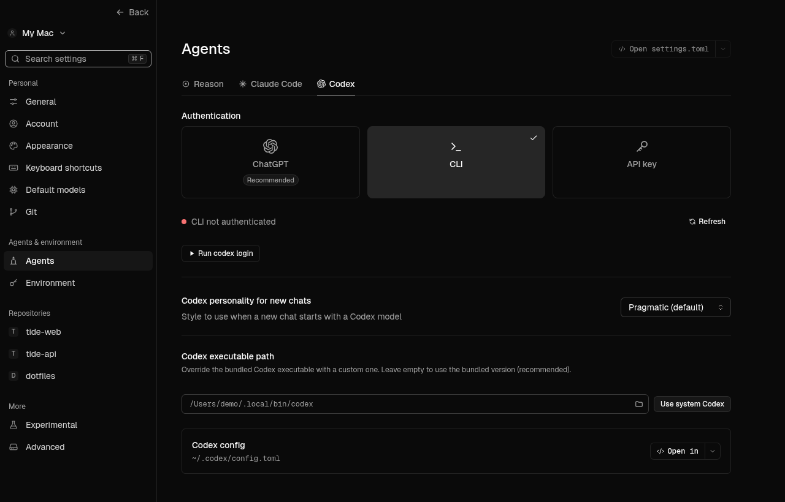
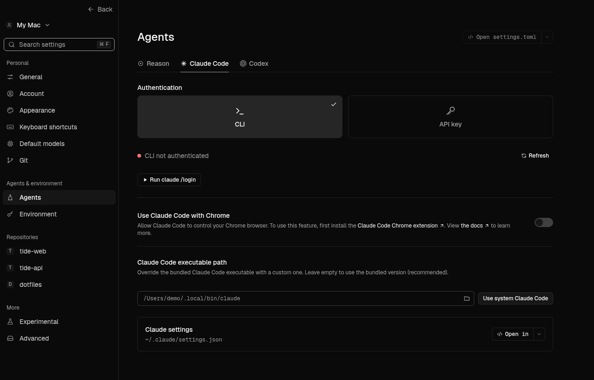
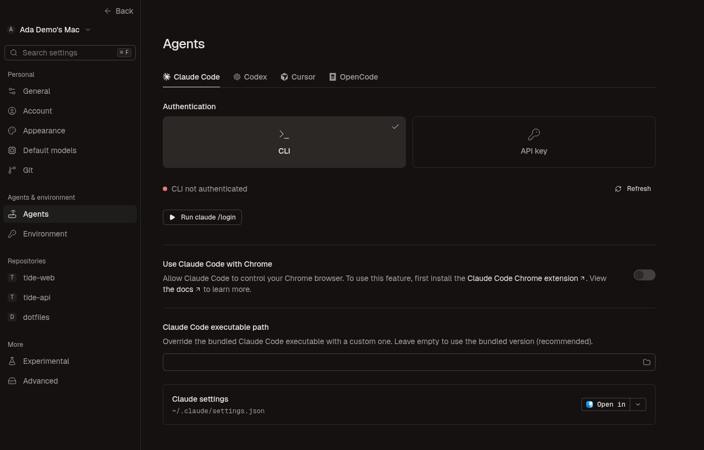

Conductor Rebuild reproduced two independent Settings navigation defects, then ran the same built-browser checks after correction. Neither test logs in or runs an agent.



Reference identity and REA IDs are retained in the local-pages evidence. Both images are browser renders. Supported tabs, app identity, fixture paths and authentication designs differ intentionally; no exact-pixel or native verdict is granted.
The provider tab now follows one URL-backed subscription rather than a one-time state copy. Canonical navigation keeps a valid provider query on Agents and removes it on other pages.
Passed: both originally failing browser conditions, 17 focused tests, 1,329 frontend unit tests, TypeScript/Vite build, color checks and whitespace checks.
Native startup, macOS URL dispatch, real authentication, filesystem persistence and end-to-end browser history were not exercised. Original #748 timing attribution remains separate and unproven.
Evidence and replay commands · Before observations · After observations